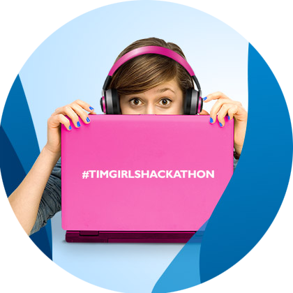
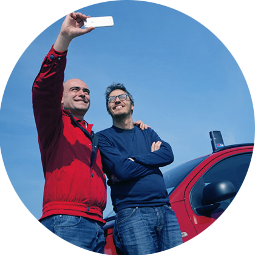
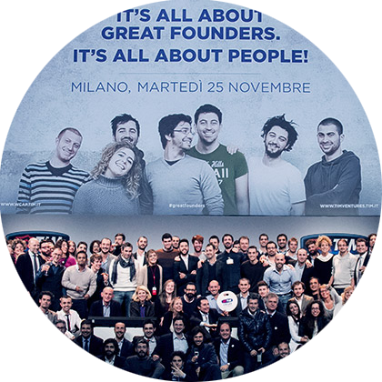
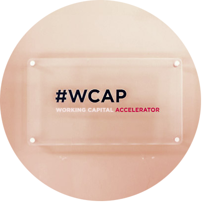

#TIMGIRLSHACKATHON
La competizione tecnologica al femminile più cool del momento torna il 6 aprile in quattro nuove città: Padova, Firenze, Cagliari, Bari. Un hackathon organizzato da TIM per coinvolgere le ragazze sui temi legati al Cyberbullismo e acquisire una maggiore consapevolezza del web.
La competizione tecnologica al femminile più cool del momento torna il 6 aprile in quattro nuove città: Padova, Firenze, Cagliari, Bari. Un hackathon organizzato da TIM per coinvolgere le ragazze sui temi legati al Cyberbullismo e acquisire una maggiore consapevolezza del web.

#KMDIFUTURO
Persone comuni, startupper, giornalisti, creativi, scrittori o imprenditori raccontano, in un ideale chilometro di strada a bordo di una Panda TIM, come il digitale e le nuove reti stiano cambiando le nostre vite e il nostro futuro. Chilometri di strada che rimandano ai chilometri di fibra, più di 16 milioni, che Telecom Italia e TIM poseranno entro il 2017, per connettere l'Italia all'Italia di domani.
Persone comuni, startupper, giornalisti, creativi, scrittori o imprenditori raccontano, in un ideale chilometro di strada a bordo di una Panda TIM, come il digitale e le nuove reti stiano cambiando le nostre vite e il nostro futuro. Chilometri di strada che rimandano ai chilometri di fibra, più di 16 milioni, che Telecom Italia e TIM poseranno entro il 2017, per connettere l'Italia all'Italia di domani.

TIM VENTURERS
Il futuro è di chi ha la forza di sognarlo.
Il primo Corporate Venture Capital italiano.
TIM partecipa alla crescita di startup innovative in ambito Internet e digital life, sostenendole nella fase di sviluppo.
Il futuro è di chi ha la forza di sognarlo.
Il primo Corporate Venture Capital italiano.
TIM partecipa alla crescita di startup innovative in ambito Internet e digital life, sostenendole nella fase di sviluppo.

JOINT OPEN LABS
La nuova frontiera dei laboratori di ricerca all'interno di poli universitari: 5 atenei, circa 350 giovani coinvolti, di cui 200 nelle aree d'innovazione dell'azienda. TIM firma un progetto per favorire la crescita, la ricerca e lo sviluppo.
La nuova frontiera dei laboratori di ricerca all'interno di poli universitari: 5 atenei, circa 350 giovani coinvolti, di cui 200 nelle aree d'innovazione dell'azienda. TIM firma un progetto per favorire la crescita, la ricerca e lo sviluppo.